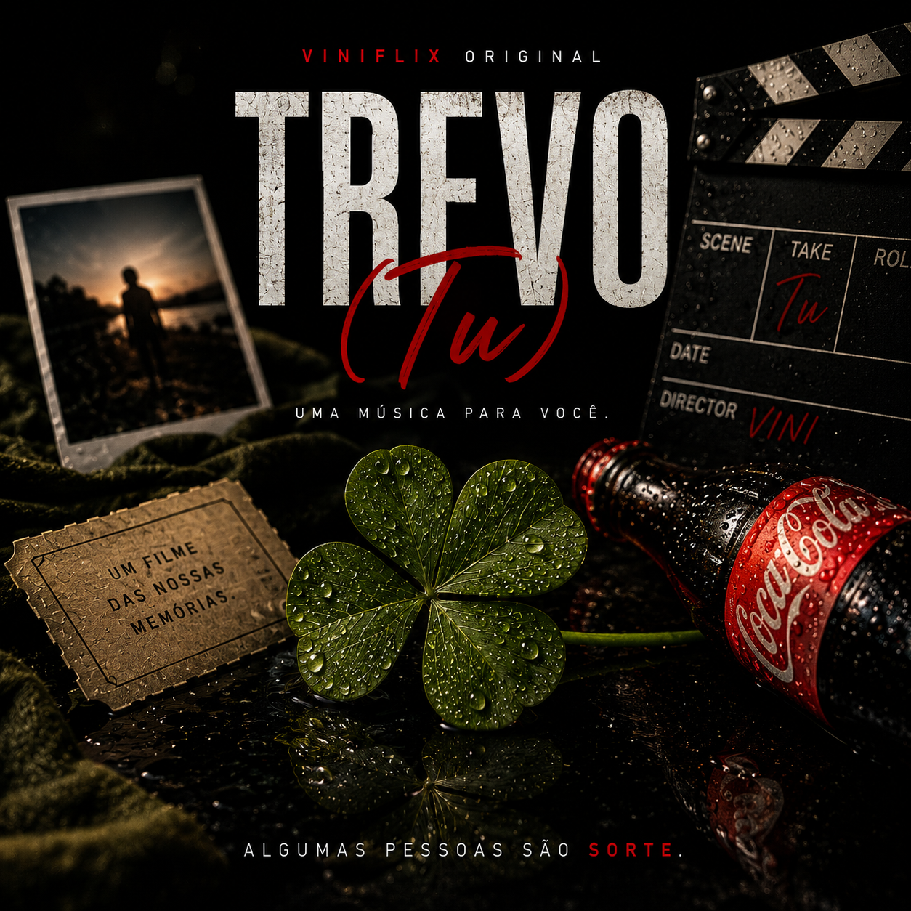

Filmes
Muito obrigado pelas sugestões de filmes! Você tem um gosto excelente, então já sei que as indicações são ótimas kkkk.
UMA EXPERIÊNCIA ESPECIAL
Algumas coisas foram preparadas especialmente para você.
UMA PRODUÇÃO ESPECIAL
Existem pessoas que mudam a nossa história para melhor, e você com certeza é uma delas. Essa música representa muito isso, afinal não é todo dia que temos a sorte de conhecer alguém assim.

ViniFlix Original
Anavitória
Porque pequenas coisas também contam histórias.
Muito obrigado pelas sugestões de filmes! Você tem um gosto excelente, então já sei que as indicações são ótimas kkkk.
Porque algumas histórias também acontecem fora da tela, e o vôlei foi onde a ente acabou tendo mais contato, então não pderia ficar de fora daqui kkkk.
Porque algumas coisas simplesmente não podem faltar né? e a Coca representa muito você kkk, impossível lembrar de você sem lembrar de uma boa Coca-Cola Gelada.
Acho que foi o dia que mais me diverti desde que cheguei aqui, pode parecer que foi um dia qualquer, mas pra mim foi muito especial, principalmente pelo momento que eu tava vivendo.
Porque algumas referências ficam mesmo nas pequenas coisas, e essa foi muito espontâneo kkkk.
Pequenos momentos que ficaram.
ViniFlix Memories
Grandes lembranças.
Algumas das coisas que ficaram foram justamente aquelas conversas simples, como quando você me indicava um filme.
Nem toda memória precisa de uma grande história. Às vezes uma conversa já basta.
Coisas que talvez você nem lembrasse, mas que acabaram ficando comigo.
E talvez seja por isso que algumas músicas acabam tendo um significado diferente.
UMA ÚLTIMA COISA
E você é uma dessas pessoas que, de alguma forma, acabou deixando pequenas lembranças pelo caminho.
CONTEÚDO EXCLUSIVO
Ainda existe uma última coisa escondida nessa história.
Algumas coisas foram feitas para serem encontradas.